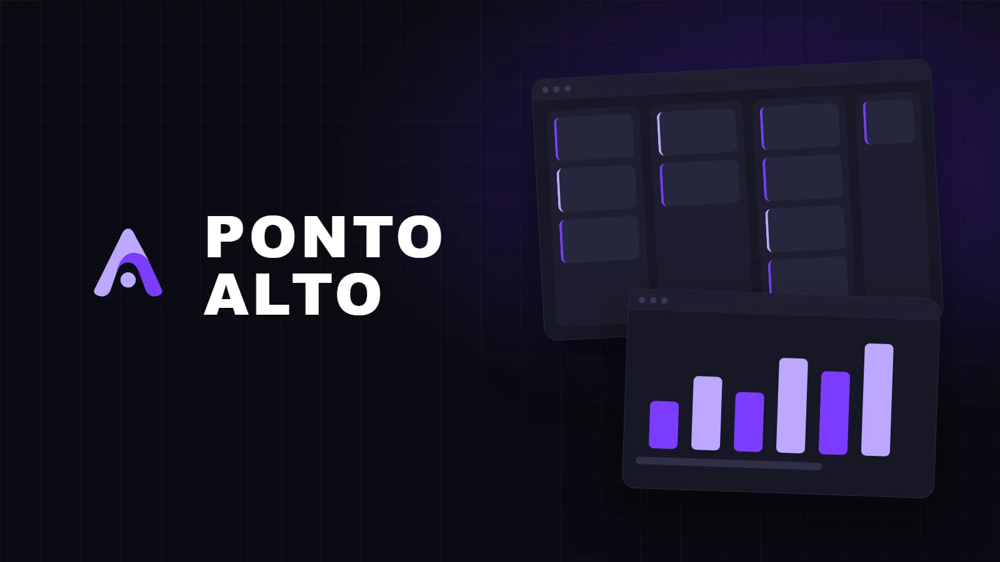

Ponto Alto, plataforma de gestão da agência
Site institucional e plataforma interna da minha agência de marketing digital, 2026, em produção. agenciapontoalto.com.br

- Site institucionalNext.js estático, CSP estrita e SEO regional
- APIFastify e Drizzle, com autenticação em dois fatores
- PostgreSQLMulti-tenant com Row Level Security forçada
- PlataformaClientes, projetos, conteúdos, tarefas e arquivos
- Portal do clienteAprovação de conteúdo pelo próprio cliente
Desafio
Tirar a operação da agência de planilhas e mensagens soltas: clientes, projetos, conteúdos, aprovações e arquivos num só lugar, com os dados de cada cliente isolados.
O que construí
- Monorepo em TypeScript: API em Fastify, front em React com Vite e TanStack Query, sobre um Design System próprio.
- Isolamento multi-tenant com Row Level Security forçada no PostgreSQL e papéis de banco separados para aplicação, migração e dono.
- Caixa de e-mail integrada à ficha de cada cliente: recebimento por webhook autenticado, busca, modelos com assinatura da marca, conferência de destinatário e caixa antes do envio, envio sem duplicidade e resultado incerto tratado sem reenvio automático, credenciais cifradas em AES-256-GCM e nenhum conteúdo de e-mail gravado no banco.
- Mais de 760 testes automatizados na API e mais de 410 na plataforma, com Vitest, Playwright, axe e CI no GitHub Actions, que publica a API e a plataforma a cada merge aprovado.
Resultado
- Primeira versão, portal do cliente e caixa de e-mail integrada em produção.
- CI reestruturado: cada pull request passou de cerca de 50 para 3 minutos.
- Desenvolvimento por agentes de IA em papéis de backend, frontend, revisão de segurança e produto, com revisão cruzada obrigatória entre modelos diferentes.